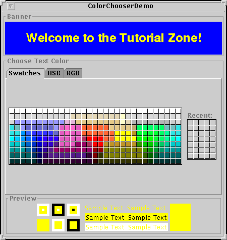
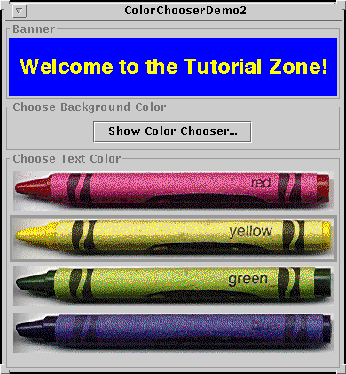

Feedback Form
|
|
Start of Tutorial > Start of Trail > Start of Lesson |
Search
Feedback Form |
Use theJColorChooserclass to provide users with a palette of colors to choose from. A color chooser is a component that you can place anywhere within your program's GUI. The
JColorChooserAPI also makes it easy to bring up a dialog (modal or not) that contains a color chooser.Here's a picture of an application that uses a color chooser to set the text color in a banner:
 The source code for the program is in
ColorChooserDemo.java.
The color chooser consists of everything within the box labeled Choose Text Color. This is what a standard color chooser looks like in the Java Look & Feel. It contains two parts, a tabbed pane and a preview panel. The three tabs in the tabbed pane select chooser panels. The preview panel below the tabbed pane displays the currently selected color.
Here's the code from the example that creates a
JColorChooserinstance and adds it to the demo's window:Thefinal JLabel banner = new JLabel("Welcome to the Tutorial Zone!", JLabel.CENTER); banner.setForeground(Color.yellow); ... final JColorChooser tcc = new JColorChooser(banner.getForeground()); ... getContentPane().add(tcc, BorderLayout.CENTER);ColorChooserconstructor in the previous code snippet takes aColorargument, which specifies the chooser's initially selected color. If you don't specify the initial color, then the color chooser displaysColor.white. See theColorAPI documentationA color chooser uses an instance of
ColorSelectionModelSee How to Write a Change Listener for general information about change listeners and change events.tcc.getSelectionModel().addChangeListener( new ChangeListener() { public void stateChanged(ChangeEvent e) { Color newColor = tcc.getColor(); banner.setForeground(newColor); } } );A basic color chooser, like the one used in the example program, is sufficient for many programs. However, the color chooser API allows you to customize a color chooser by providing it with a preview panel of your own design, by adding your own chooser panels to it, or by removing existing chooser panels from the color chooser. Additionally, the
JColorChooserclass provides two methods that make it easy to use a color chooser within a dialog.The rest of this section discusses these topics:
Now turn your attention toColorChooserDemo2.javaJColorChooserAPI. In addition to the main source file, this example needs one other source file and the crayon images. See the examples index for links to all the files required by this example.Here's a picture of
ColorChooserDemo2: Additionally, this program customizes the banner's text color chooser in these ways:
Removing or Replacing the Preview Panel covers the first customization. Creating a Custom Chooser Panel discusses the last two.
- Removes the preview panel
- Removes all of the default chooser panels
- Adds a custom chooser panel
This program also adds a button that brings up a color chooser in a dialog, which you can use to set the banner's background color.
TheJColorChooserclass provides two class methods to make it easy to use a color chooser in a dialog.ColorChooserDemo2uses one of these methods,showDialog, to display the background color chooser when the user clicks the Show Color Chooser... button. Here's the single line of code from the example that brings up the background color chooser in a dialog:The first argument is the parent for the dialog, the second is the dialog's title, and the third is the initially selected color.Color newColor = JColorChooser.showDialog( ColorChooserDemo2.this, "Choose Background Color", banner.getBackground());The dialog disappears under three conditions: the user chooses a color and clicks the OK button, the user cancels the operation with the Cancel button, or the user dismisses the dialog with a frame control. If the user chooses a color, the
showDialogmethod returns the new color. If the user cancels the operation or dismisses the window, the method returnsnull. Here's the code from the example that updates the banner's background color according to the value returned byshowDialog:The dialog created byif (newColor != null) { banner.setBackground(newColor); }showDialogis modal. If you want a non-modal dialog, you can useJColorChooser'screateDialogmethod to create the dialog. This method also lets you specify action listeners for the OK and Cancel buttons in the dialog window. UseJDialog'sshowmethod to display the dialog created by this method. For an example that uses this method, see Specifying Other Editors in the How to Use Tables section.
By default, the color chooser displays a preview panel. The example program removes the text color chooser's preview panel with this line of code:This effectively removes the preview panel because a plaintcc.setPreviewPanel(new JPanel());JPanelhas no size and no default view. To set the preview panel back to the default, usenullas the argument tosetPreviewPanel.To provide a custom preview panel, you also use
setPreviewPanel. The component you pass into the method should inherit fromJComponent, specify a reasonable size, and provide a customized view of the current color. To get notified when the user changes the color in the color chooser, the preview panel must register as a change listener on the color chooser's color selection model as described previously.
The default color chooser provides three chooser panels:You can extend the default color chooser by adding chooser panels of your own design with
- Swatches -- for choosing a color from a collection of swatches.
- HSB -- for choosing a color using the Hue-Saturation-Brightness color model.
- RGB -- for choosing a color using the Red-Green-Blue color model.
addChooserPanel, or you can limit it by removing chooser panels withremoveChooserPanel.If you want to remove all of the default chooser panels and add one or more of your own, you can do this with a single call to
setChooserPanels.ColorChooserDemo2uses this method to replace the default chooser panels with an instance ofCrayonPanelsetChooserPanelsfrom that example:The code is straighforward: it creates an array containing the//Override the chooser panels with our own. AbstractColorChooserPanel panels[] = { new CrayonPanel() }; tcc.setChooserPanels(panels);CrayonPanel. Next the code callssetChooserPanelsto set the contents of the array as the color chooser's chooser panels.
CrayonPanelis a subclass ofAbstractColorChooserPanel
void buildChooser()- Creates the GUI that comprises the chooser panel. The example creates four toggle buttons -- one for each crayon -- and adds them to the chooser panel.
void updateChooser()- This method is called whenever the chooser panel is displayed. The example's implementation of this method selects the toggle button that represents the currently selected color.
public void updateChooser() { Color color = getColorFromModel(); if (color.equals(Color.red)) { redCrayon.setSelected(true); } else if (color.equals(Color.yellow)) { yellowCrayon.setSelected(true); } else if (color.equals(Color.green)) { greenCrayon.setSelected(true); } else if (color.equals(Color.blue)) { blueCrayon.setSelected(true); } }
String getDisplayName()- Returns the display name of the chooser panel. The name is used on the tab for the chooser panel. Here's the example's
getDisplayNamemethod:public String getDisplayName() { return "Crayons"; }Icon getSmallDisplayIcon()- Returns a small icon to represent this chooser panel. This is currently unused. Future versions of the color chooser might use this icon or the large one to represent this chooser panel in the display. The example's implementation of this method returns
null.
Icon getLargeDisplayIcon()- Returns a large icon to represent this chooser panel. This is currently unused. Future versions of the color chooser might use this icon or the small one to represent this chooser panel in the display. The example's implementation of this method returns
null.
The following tables list the commonly usedJColorChooserconstructors and methods. Other methods you might call are listed in the API tables in The JComponent Class. The API for using color choosers falls into these categories:
- Creating and Displaying the Color Chooser
- Customizing the Color Chooser's GUI
- Setting or Getting the Current Color
Creating and Displaying the Color Chooser Method Purpose JColorChooser()
JColorChooser(Color)
JColorChooser(ColorSelectionModel)Create a color chooser. The default constructor creates a color chooser with an initial color of Color.white. Use the second constructor to specify a different initial color. TheColorSelectionModelargument, when present, provides the color chooser with a color selection model.Color showDialog(Component, String, Color)Create and show a color chooser in a modal dialog. The Componentargument is the dialog's parent, theStringargument specifies the dialog's title, and theColorargument specifies the chooser's initial color.JDialog createDialog(Component, String, boolean, JColorChooser, ActionListener, ActionListener)Create a dialog for the specified color chooser. As with showDialog, theComponentargument is the dialog's parent and theStringargument specifies the dialog's title. The other arguments are as follows: thebooleanspecifies whether the dialog is modal, theJColorChooseris the color chooser to display in the dialog, the firstActionListeneris for the OK button, and the second is for the Cancel button.
Customizing the Color Chooser's GUI Method Purpose void setPreviewPanel(JComponent)
JComponent getPreviewPanel()Set or get the component used to preview the color selection. To remove the preview panel, use new JPanel()as an argument. To specify the default preview panel, usenull.void setChooserPanels(AbstractColorChooserPanel[])
AbstractColorChooserPanel[] getChooserPanels()Set or get the chooser panels in the color chooser. void addChooserPanel(AbstractColorChooserPanel)
AbstractColorChooserPanel removeChooserPanel(AbstractColorChooserPanel)Add a chooser panel to the color chooser or remove a chooser panel from it.
Setting or Getting the Current Color Method Purpose void setColor(Color)
void setColor(int, int, int)
void setColor(int)
Color getColor()Set or get the currently selected color. The three integer version of the setColormethod interprets the three integers together as an RGB color. The single integer version of thesetColormethod divides the integer into four 8-bit bytes and interprets the integer as an RGB color as follows:
void setSelectionModel(ColorSelectionModel)
ColorSelectionModel getSelectionModel()Set or get the selection model for the color chooser. This object contains the current selection and fires change events to registered listeners whenever the selection changes.
This table shows the examples that useJColorChooserand where those examples are described.
Example Where Described Notes ColorChooserDemoThis section Uses a standard color chooser. ColorChooserDemo2This section Uses one customized color chooser and one standard color chooser in a dialog created with showDialog.TableDialogEditDemoHow to Use Tables Shows how to use a color chooser as a custom cell editor in a table. The color chooser used by this example is created with createDialog.
|
|
Start of Tutorial > Start of Trail > Start of Lesson |
Search
Feedback Form |